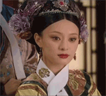
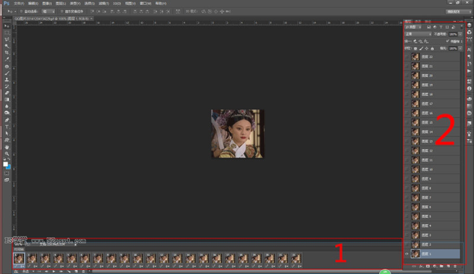
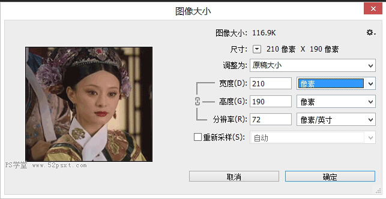
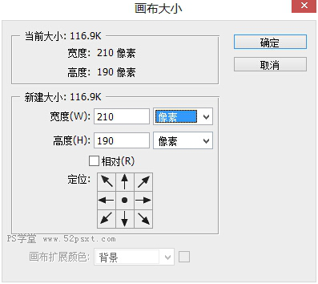
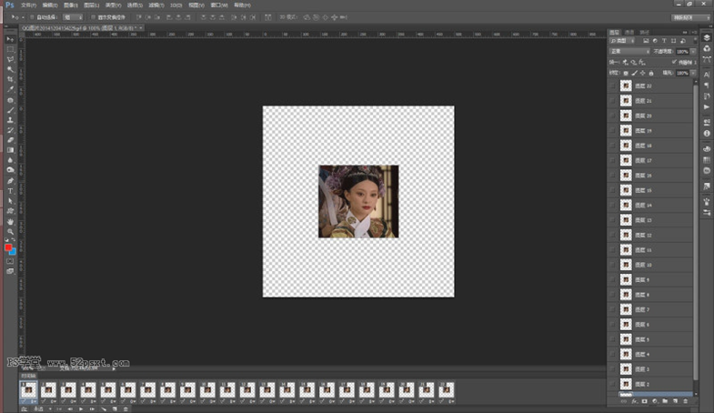
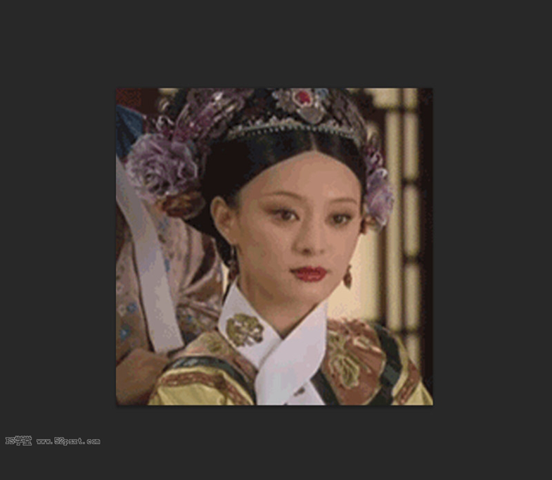
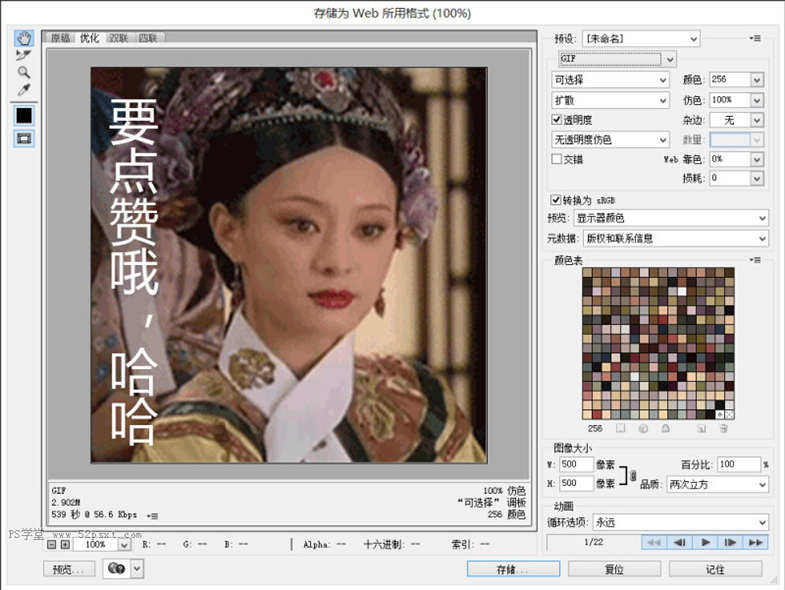
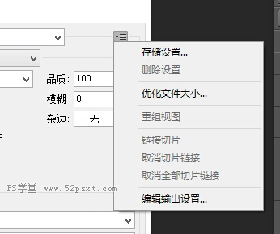
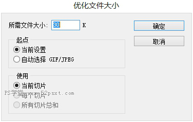

Photoshop制作动图，想必大家都知道这个功能，但是实际上，PS制作动图比不上flash，但是在修改以及图像质量上PS远胜flash。
大家都知道，flash压缩图片储存gif的时候会使图片严重失真，通过PS存储就不会有这样的问题。在PS中给gif图添加文字，调整大小，都比flash中来的方便的多，今天就给大家带来一篇关于PS修改动图的教程。
---------------------我是分割线---------------------
这里说一说关于PS制作动图的原理，对flash有些了解的可以不看。
PS制作动图，本质上是把每一帧的图等时差的播放，
例如：第0.3秒放一张图0.6秒放第二张图0.9秒放第三张图
当三张图存在一定关联的时候我们看到的就是动起来的画面
这里每一张图，我们叫做一帧
控制帧数，就能够控制文件大小（很多网站对GIF大小是有限制的）
---------------------我是分割线---------------------

上面这个就是今天要用的素材图，首先我们要修改它的大小
1、了解界面
首先，我们在PS中打开gif图，然后点窗口→时间轴，看到的界面是这样。

在上图中，1代表的就是按照时间顺序出现的图片，2是存放各个图片，调整每一帧显示的画面。
简单的说，就是每一帧我做一张图连贯起来成gif（真顺口）
这些都不重要，会做动图的也没必要看我这个教程，下面才是我今天要说的。
2.修改大小
图像→图像大小 （等比缩放）

或者 图像→画布大小（裁切缩放）

对这两者不了解的请自行百度 《Photoshop图像大小和画布大小的差别》
图像大小就不说了，这里只说下画布大小，我们这里设置成500px*500px

然后是重重之重，选中全部图层，编辑→自由变换 调整到合适大小

3.我们继续给图片添加个文字。
选择最上面一层，添加个图层，注意不要改变图片前面小眼睛的状态（不要更改是否显示图层）
文字工具，写上需要的文字

然后就可以存储了。
4.文件→存储为web所用格式 参数如图

注意两点，右上角选择GIF，右下角循环选项选择永远，这样gif简单修改就OK了
说句题外话，右上角可以简单的控制图片大小（占用空间） 如图

选择优化文件大小，参数如图

到此本教程就结束了，最后放上效果图：